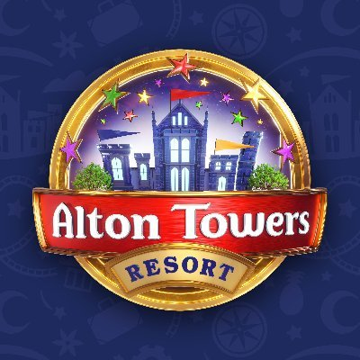

The grounds at Alton Towers were first opened to the public by the 18th Earl in 1860. By 1890 Alton Towers was attracting crowds of 30,000 to watch acrobats, lion tamers, elephants, bands and fireworks, as well as the gardens. In the early 1900s the 20th Earl, who had interests in the Talbot Motor Car Company which he had founded, began to spend more and more time at his Ingestre Estate. Lady Shrewsbury lived alone at the Towers until 1923 after her husband's death in 1921. Although the bulk of the estate had already been sold in 1918, in 1924 the remaining lands and Alton Towers itself were sold to a group of local businessmen. So, after some 700 years the Towers and the Estate passed out of the hands of the Earls of Shrewsbury.The house and gardens remained open until the outbreak of War when it was requisitioned as an Officer Cadet Training Camp. The Ministry of Defence retained possession of the buildings until the mid 1950's when, after some legal argument over the condition of the towers, it was finally returned to the then owners, Alton Towers Ltd, who continued to run it as a successful business. Although the Park had become a well known tourist attraction throughout the '60s and '70s with its inclusion of travelling rides throughout the property as well as a boating lake and chairlift. It was not until 1980 that it became known as a Theme Park taking inspiration from Disney when designing the layout and theming for the park. They became known as a fully fledged theme park and put Alton Towers on the map when they introduction of the then revolutionary Corkscrew roller coaster. It was the first double inversion roller coaster in the UK, when opening the queue time reached 5-6 hours. Since then they have seen many different themed lands and roller coasters come and go to create the Alton Towers everyone knows and loves today.
| Name | Track Length | Run Time | Max Height | Max Speed | Riders Per Hour |
|---|---|---|---|---|---|
| The Smiler | 1,170 m | 2 minutes 45 seconds | 30 m | 80 kph | 1,200 rph |
| Oblivion | 373 m | 1 minute 15 seconds | 60 m | 110 kph | 1,700 rph |
| Rita | 640 m | 0 minutes 49 seconds | 21 m | 98 kph | 1,040 rph |
| Thirteen | 756 m | 1 minute 40 seconds | 20 m | 42 kph | 1,400 rph |
| Wicker Man | 795 m | 3 minutes 30 seconds | 20 m | 65 kph | 952 rph |
| Galactica | 840 m | 1 minute 40 seconds | 14 m | 44 kph | 1,500 rph |
| Nemesis Reborn | 675 m | 1 minute 30 seconds | 13.5 m | 50 kph | 1,500 rph |
The Smiler is one of Alton Towers most iconic and controversial roller coasters, renowned for its innovative design and intense thematic experience. Developed by Alton Towers in collaboration with Gerstlauer, the ride opened on May 31, 2013. Its unique theme revolves around psychological manipulation, with the coasters narrative centered on a sinister form of mind control. The ride is distinguished by its elaborate theming, including a large, eerie smiley face sculpture and various unsettling elements that enhance the rides psychological impact. The Smiler boasts an impressive layout which features its record-breaking 14 inversions. This complex design and the use of on-ride audio and immersive theming create a distinctive and thrilling experience for riders. However, The Smilers history is marked by a significant incident. On June 2, 2015, the ride was involved in a serious accident when a train collided with a stationary one due to a technical fault. The collision injured 16 people, some severely, leading to a temporary closure of the ride. An extensive investigation by the Health and Safety Executive (HSE) followed, resulting in significant modifications and safety improvements to the ride before it reopened on March 19, 2016. Despite the challenges, The Smiler continues to be a major attraction at Alton Towers. Its intense inversion-filled experience and psychological theming make it a standout feature of the park, reflecting both the innovative spirit and the complexities involved in operating high-thrill rides.
Oblivion is one of Alton Towers most thrilling and iconic rides, renowned for its groundbreaking design and unique experience. During The construction of Oblivion they had to dig a gigantic hole in the ground which the dirt that was dug out was later used for the line leading to the station. Opening on March 14, 1998, Oblivion was the first roller coaster in the world to feature a vertical drop, making it a landmark in the roller coaster industry. Designed by the Swiss company Bolliger & Mabillard (B&M), the rides concept revolves around the theme of facing your fears and the sensation of plummeting into the unknown. The ride features a compact but intense layout with Oblivions defining feature is its 87-degree vertical drop, which creates a weightless feeling of freefall as riders plunge into a dark, underground tunnel. Its thrilling drop makes it one of the fastest rides in the park. The sensation of diving into the abyss and emerging from the tunnel is designed to evoke a powerful sense of excitement and fear. Oblivions impact on theme park design was significant, as it introduced a new level of thrill with its vertical drop and compact design. The ride’s success has influenced numerous other roller coasters around the world that incorporate similar vertical elements. Its innovative approach and the psychological impact of the ride continue to make it a favorite among thrill-seekers.The ride's distinctive theming and design have ensured its place as a central attraction at Alton Towers. Oblivion remains a testament to the evolution of roller coaster technology and design, continuing to captivate visitors with its exhilarating experience and dramatic, fear-inducing drops. The famous Catch phrase of Dont look down had to be removed as the residents around the park complained about the riders being too noisy.
Rita is one of Alton Towers standout attractions, known for its high-speed launch and distinctive racing theme. Opened on March 22, 2005, Rita was introduced as a high-energy roller coaster designed to simulate the experience of drag racing. Manufactured by Intamin, the rides concept centers around the thrill of acceleration and speed, reflecting a racing cars powerful takeoff.The ride is famous for its launch mechanism, which propels riders from 0 to 98 km/h (61 mph) in just 2.5 seconds, creating a powerful and exhilarating start.This rapid acceleration provides a sensation of intense G-forces and speed, making Rita a thrilling experience from the moment it begins. Most people think because of this powerful start and the nickname queen for speed that it is the fastest Ride within Alton Towers however it is on the slower end of the thrill rides. During the short ride riders experience several airtime moments and high-speed twists. Theming plays a significant role in Rita's appeal, with the ride designed to evoke the feeling of a drag race. The attractions narrative and design emphasize the excitement and power of racing, enhancing the overall thrill for riders. Its integration into the parks Dark Forest area complements the ride's high-octane, racing-inspired experience. The famous phrase "you must escape, go,go,go" adds to the thrill of the ride and the themeing of the dark forest as this is supoosed to be a haunted section of Alton Towers meaning it fits perfectly along side Thirteen. Since its opening, Rita has become a favorite among visitors seeking a quick but intense thrill. Its combination of rapid acceleration, engaging theming, and high-speed elements ensures it remains a popular and exhilarating part of the Alton Towers lineup.
Thirteen is a distinctive roller coaster at Alton Towers, known for its unique blend of thrills and thematic storytelling. It officially opened on March 20, 2010, and was developed by the renowned roller coaster manufacturer Intamin. The ride's design cleverly integrates elements of suspense and surprise, enhancing the overall experience with its focus on the theme of fear and the unknown. Thirteen is notable for its combination of traditional roller coaster elements with a dramatic and unexpected twist. The ride begins with a conventional layout of drops and airtime moments but then introduces a sudden and eerie drop into a subterranean section, adding a unique element of surprise. This drop is accompanied by a series of thematically designed effects and elements that contribute to the ride's atmosphere of fear and excitement. The thematic design of Thirteen is inspired by the concept of ancient curses and supernatural elements. Set within the Dark Forest area of Alton Towers, the ride's narrative unfolds through atmospheric elements, including dark tunnels and mysterious effects that enhance the sense of dread and anticipation. The transition from the surface to the underground section is a key feature, amplifying the ride's suspense and adding to its overall appeal. Since its opening, Thirteen has been a favorite among visitors due to its innovative approach to roller coaster design. Its ability to combine traditional thrills with a unique thematic experience ensures that it remains a compelling and memorable attraction at Alton Towers.
Wicker Man is a standout attraction at Alton Towers, celebrated for its impressive design and immersive thematic elements. Opened on March 17, 2018, Wicker Man is a family wooden roller coaster manufactured by Great Coasters International (GCI). The ride is distinguished by its thematic focus on ancient rituals and folklore, creating a unique and atmospheric experience for visitors. Wicker Man is notable for its combination of classic wooden coaster elements with modern design techniques. Riders experience a series of thrilling drops, airtime hills, and fast-paced turns, all set within the context of the ride's rich narrative. During the ride guests are immersed in a story of an ancient wicker figure and its symbolic significance. Thematically, Wicker Man is designed to evoke the atmosphere of a forgotten pagan ritual. The centerpiece of the ride is a massive, intricately designed wicker figure that looms over the entrance and interacts with the coaster's elements. This theming includes a dramatic burning effect, where riders pass through the wicker figure as it appears to ignite, adding to the sense of awe and excitement. The ride's immersive experience, with carefully crafted details that contribute to the overall narrative of the legend. Since its debut, Wicker Man has been praised for its compelling theming and engaging ride experience. Its combination of traditional wooden coaster thrills with a rich, atmospheric storyline ensures that it remains a popular and memorable part of Alton Towers lineup, appealing to both coaster enthusiasts and casual visitors alike.
Galactica is a notable roller coaster at Alton Towers, recognized for its innovative flying coaster experience and futuristic theming. Originally opened on March 20, 2016, Galactica was developed by Vekoma and re-themed from its original incarnation as Air. The ride's concept revolves around space travel and the sensation of flight, offering a unique and immersive experience for riders. Galactica is renowned for its flying coaster design, where riders are positioned face-down in a prone position, simulating the feeling of flight. This design allows guests to experience a sensation akin to soaring through the air, enhanced by the ride's futuristic theme. The thematic elements of Galactica are inspired by the concept of space exploration and virtual reality. The ride features a high-tech, space-themed environment, with elements designed to evoke the feeling of traveling through a galactic landscape. Although the initial virtual reality (VR) experience was later removed due to the fact that riders were having to wait longer for the cart with the vr and the ride was taking too longer to clean before having the next riders on. The Vr headsets were also unreliable. The ride's immersive theming continues to provide a compelling experience. Since its debut, Galactica has been praised for its unique flying coaster experience and its integration of futuristic and space-themed elements. Its innovative design and immersive theming have made it a standout attraction at Alton Towers, offering a distinctive ride experience that appeals to both thrill-seekers and those interested in the sensation of flight.
Nemesis Reborn is a notable roller coaster at Alton Towers, renowned for its intense inverted coaster experience and its rich history within the park. Originally opening on March 19, 1994, as Nemesis, the ride quickly became a classic attraction known for its innovative design and thrilling elements. The ride was re-themed and referred to as Nemesis Reborn as the coaster was retraced with new theming surrounding the ride. Designed by Bolliger & Mabillard (B&M), Nemesis is famous for its inverted design, where riders are suspended below the track and experience the sensation of being flipped and twisted through the layout. The ride offers a series of intense inversions and airtime moments. Thematic elements of Nemesis Reborn are centered around the concept of an alien creature that has been unleashed and is wreaking havoc. The ride's immersive theming includes a backstory involving a monstrous creature that interacts with the coaster's elements, creating a sense of excitement and fear. This narrative, combined with the ride's thrilling inversions and high-speed elements, enhances the overall experience for riders. Since its debut, Nemesis has been celebrated for its groundbreaking design and thrilling ride experience. The re-themed Nemesis Reborn continues to be a popular attraction at Alton Towers, offering a unique and intense roller coaster experience that remains a favorite among thrill-seekers and enthusiasts.
